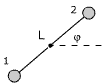
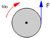

|
Un disco homogéneo,
m = 5 kg, R = 1m, puede girar alrededor de un eje horizontal que
pasa por su c.d.m. Tangencialmente al disco se aplica una fuerza
de 4 N, calcula la velocidad angular del disco al cabo de 10 vueltas
|
|
Una varilla de 1 m de longitud y 1
kg de masa puede girar en un plano vertical alrededor de un eje que pasa
por su extremo. Se deja en libertad la varilla a partir de la posición
horizontal, calcula su velocidad angular cuando pase por la vertical |
 |
El sistema, inicialmente
en reposo, se deja en libertad, calcula la velocidad angular de
la varilla cuando pase por la vertical
El eje pasa por el punto medio de la varilla. Se supone m1>
m2 y que la masa de la varilla es despreciable
|
|
 |
Un cilindro homogéneo,
m = 1 kg, R = 5 cm, gira alrededor de su eje a 600 r.p.m. Se aplica
tangencialmente en su periferia una fuerza de frenado de 0.1 kp.
Determina las vueltas que dará hasta pararse |
|